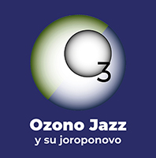

 V I D E O S
(31)
OZONO cuenta con una
variedad de videos, desde registros de conciertos en
diferentes formatos,
con danza contemporánea y artes plásticas simultáneas, con
poesía insonora,
así como documentales sobre la
agrupación y como banda sonora a videos de terceros:
Enlaces de los
videos, por instrumentación:
(El enlace en el nombre de la pieza es para info,
partitura, discos, videos)
Solo
DESAMORES
-Timelapse Music Clip, video de Tomek
Baczkowski de Emilio sólo en vivo
Emilio tocando en una casa vieja pero limpia en Tenerife, destruida
por el tiempo, una hora antes de partir al aereopuerto, de la
mano experta del polaco Tomek.
https://youtu.be/DquDK0cF54k
ESPERANZAS-2015, video de
Tomek Baczkowski de
Emilio sólo en vivo
Emilio grabado parcialmente en un concierto en el
TwinFIn Surf Camp, Tenerife, en la última noche que se
convierte en una hoejada al camp fabuloso de Nico Abad
https://youtu.be/49nZwia29WQ
____________________________
Dúos
CANCIÓN
DE CUNA - Por TV Salias, ensayo
de Juan y Emilio en La Perla de la pieza Cuna en
formación
https://youtu.be/CAptjOZTc_4
CANCIÓN
DE CUNA - Por Anjani Kumar, en un cumpleaños, guitarra con
tablã, en la casa de Agregado Cultural de la Embajada de
la India.
https://youtu.be/aMQcdVwtJEI
ENCANTO,
ESPIRALES (frag) - Expo de Amarillo Piña, Los Teques, Juan y Emilio
https://youtu.be/s5whU9JMr-A
ESPERANZAS-2015 -
Ensayo de Juan y Emilio en La Perla, la primera vez que se
completa la canción de arriba a abajo.
https://youtu.be/Kw8rbybvP6A
ESPIRALES
- Concierto
en la Universidad Monteávila, Caracas, guitarra con tablã
https://youtu.be/SSR3yrdADuk
EVOLUCIÓN
- Concierto en el Laberinto Cromovegetal (Carlos Cruz-Diez),
USB, Caracas, guitarra con tablã
https://youtu.be/TsWhqPZtTsM
EVOLUCIÓN
- (fragmento) Concierto en Plaza Venezuela, Caracas, guitarra con tablã
https://youtu.be/YKZw1O4AzdY
LABERINTO
- Concierto en la Universidad Monteávila,
Caracas, guitarra con tablã
https://youtu.be/QCKTEd8XwTM
TERRUÑO
- Concierto de Protesta USB, Caracas, Juan y
Emilio
https://youtu.be/CQ0qMo8_xQw
____________________________
Tríos
ENCANTO - Joroponovo arpeado - Video
de ESCINETV, Concierto AdM, Unearte, Emilio, guit 6; Juán,
guit 12; Lizardo, maracas
https://youtu.be/kt6R3g5Gzm8
ESPIRALES - Joroponovo
bandoleado - Video de ESCINETV,
Concierto AdM, Unearte, Emilio,
guit 6; Juán, guit 12; Lizardo, maracas, con anuncio de la
solicitud enmienda de la constitución.
https://youtu.be/amZdaHGXQXM
AGUACLARA
- A Musical Afternoon by Anjani Kumar, en la casa de la Embajadora de la India,
Country Club, Caracas, Emilio, Juan y Marcy
https://youtu.be/eUoFl6-nbJA
ESPIRALES
- A Musical Afternoon by Anjani Kumar, en la casa de la Embajadora de la India,
Country Club, Caracas. Emilio, Juan
y Marcy
https://youtu.be/JZw9lgqhdpo
ESPIRALES
- Concierto de Protesta - USB, Caracas, Emilio y Juan, con
la aparición especial de María José Castejón,
maracas
https://youtu.be/OEndzPrbeZY
ESPIRALES
- Joroponovo bandoleado, boda de Emiliana y Alberto en Caracas, con Emilio, guit 6; Juán, guit 12; Lizardo,
maracas
https://youtu.be/7jCA6l_RoCI
ENCANTO
- Joroponovo arpeado, boda de Emiliana y Alberto en Caracas,
con Emilio, guit 6; Juán, guit
12; Lizardo, maracas
https://youtu.be/6-DKm4y8nqQ
ENCANTO
- En casa de Emiliano, en San Antonio, Emilio, guit 6; Juán, guit 12; Dha Maharaj,
tablã
https://youtu.be/2XPM3BUilgk
____________________________
Cuartetos
RESPLANDOR
- Club Jóspital, La Laguna, Tenerife, 23-11-2019, concierto
sin ensayo con Steve, Jenka y Marie, producción del TwinFin
Surf Camp, Nico Abad.
https://youtu.be/8dEQ5ESkzsI
____________________________
Septetos
ESPIRALES
- Video de Carlos Eduardo Bertorelli, con la estrella
bailarina de Sara Angelina Conde Mendoza, de la grabación en el
disco Natura,
https://youtu.be/z21tLTyfgiQ
ESPIRALES
- Hotel Humboldt, ViveTV, toma de referencia fja de la
producción del video en vivo en el Cerro del Ávila. A pesar de tener el audio
terminado, no se terminó nunca por parte de Vive TV,
así como ninguna de las otras piezas del concierto.
https://youtu.be/F01LrsCWPs0
Septetos
con Danza & Pintura
CANCIÓN
DE CUNA - video de Rancho Wladimir Pérez de Ozono con
Danza por parte de Nathalia Molina y Nayibe Berroterán,
grabado en vivo.
https://youtu.be/IzYuAI2q1wc
ENCANTO
- video de Rancho Wladimir Pérez de Ozono junto al artista
plástico Amarillo Piña, grabado todo en vivo.
https://youtu.be/aY0kgz2Ey8I
____________________________
Con Poesía Insonora
DESAMORES
- El video de Tomek con poesía insonora escrita de
Andrea Sucre
https://youtu.be/GXJNExXnDGw
____________________________
Documentales
GIROS - Catálysis 1973, película
de 16 mm muda, grabada por Pedro Galindo en vivo en
concierto de junio 1973, con la banda sonora de la misma pieza
pero grabada por la banda Akurima, 2005.
Primer solo de Emilio grabado al estilo
bandoleado.
https://youtu.be/gdOP7V2BMlk
"Nuevo disco en construcción...",
video de Nabor Sambrano para FamiliaTV, "Rastros y Rostros",
documental extenso con entrevistas a todos los músicos,
mientras asisten a un ensayo en un estudio en Bello Monte, con
un toque breve al final.
https://youtu.be/sKb7pwr90Xw
REENCUENTRO
- Inseparable amistad musical. Grabación casera en la última
noche de Emilio de su visita al apartamento nuevo de Zulay e
Ike, en Florida, EEUU, donde estrenan una primera versión de Añoranza con
cuatro y dos guitarras.
https://youtu.be/nUzClVQxoBQ
____________________________
Banda sonora
ESPIRALES
y ENCANTO (frag.)
en trío en la Amarillo Piña Expo en C.C. El Recreo, Emilio, guit 6; Juán, guit
12; Lizardo, maracas
https://youtu.be/PPNicLsfDik
ESPIRALES
- “Una Visión de mi Entorno” de Mardonio Díaz, de la grabación
en el disco Natura,
sobre San Antonio de los Altos.
https://youtu.be/H0zmkzJKE-s
EVOLUCIÓN
- “Una Visión de mi Entorno 2” de Mardonio Díaz, de la grabación en el disco Natura, sobre San
Antonio de los Altos.
https://youtu.be/nkXRQIwIIW
{kind=link}